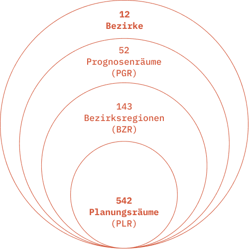
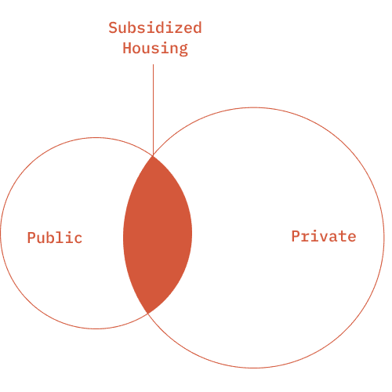

- Type
- Student Project
- Category
- Urban Data
- Timeframe
- 1 month
- Tools
- Figma, Photoshop
Berlin has changed. But who has been priced out?
This project looks at how rent prices, income, and housing dynamics have reshaped access to housing in Berlin — and who can still afford to live here.
Over the past decade, rising rents have outpaced income growth for many, making large parts of the city increasingly unaffordable, especially for low-income residents.
Who is actually being priced out?
I wanted to understand which groups of people are most affected by the rising rents — who can still afford to live in the city, and who’s slowly being pushed away.
What does affordable even mean in this context?
The term affordable housing is often used, but I wanted to see what it really means in measurable terms, how much rent can people realistically pay, and where does the threshold of affordability begin to break?
How does rent affordability compare across the city and by income?
To make the picture clearer, I looked at how affordability changes from one district to another, and how these differences grow when we factor in household income and local rent trends.
What is Housing Affordability?
Housing is considered affordable if a household spends no more than 30% of its net income on rent.
Rent burden above this threshold is considered financially straining — especially for low-income households.
What are LOR?
The Lebensweltlich Orientierte Räume system divides the city into standardized spatial units to support neighborhood-level analysis and policy-making based on social and everyday life structures. As of the 2021 update, Berlin is divided into:
- 12 Bezirke (districts)
- 52 Prognoseräume (PGRs) — upper-level forecasting areas
- 143 Bezirksräume (BZRs) — medium-level forecasting areas
- 542 Planungsräume (PLRs) — the smallest, most granular unit in this analysis

What kind of Rent is analyzed?
This project uses cold rent (Kaltmiete) from new listings, reflecting market entry prices between 2013 and 2023.
These prices are not the same as the Mietspiegel, which represents average rents across existing contracts.
Warm rent (Warmmiete), which includes heating and service charges, is not analyzed here.
Apartments are grouped by number of rooms:
- 1-room: up to 50 m²
- 2-room: ~50–65 m²
- 3 rooms: over 80 m²
Most affordability comparisons focus on 1-room apartments, as they are typically the most accessible for low-income residents.
What is Subsidized Housing?
Subsidized housing includes units with rent or access restrictions, often tied to public funding.
Tenants typically need a WBS certificate (Wohnungsberechtigungsschein) to qualify.
These units can be owned by either public or private landlords.

What Income is used?
This project uses monthly net income per inhabitant (Verfügbares Einkommen der privaten Haushalte je Einwohner)
It compares:
- Median net income
- Bürgergeld allowance and maximum coverage for rent.
These values are used to estimate rent burden and assess affordability across groups.